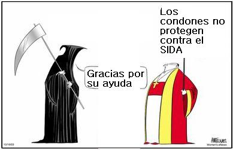

Introducción por: Ferney Yesyd Rodríguez
Pocos personajes contemporáneos han sido tan retrógrados como el Papa Benedicto XVI. Parece ser que en medio de un deseo por tiempos mejores el Espíritu Santo decidió escoger al más conservador como Papa. En los últimos veinte años ha estado detrás de las decisiones de la ICAR (Iglesia Católica Apostólica y Romana) en temas como anticoncepción, aborto, eutanasia, homosexualidad, relaciones con otras religiones, teología de la liberación.

A los métodos anticonceptivos los califica de Intrínsecamente demoniacos. Claro, entre más control tenga la mujer sobre el número de hijos y el momento en que empieza a tenerlos, más libre es, y esto ha horrorizado al Vaticano desde siempre. Además que entre menos anticonceptivos, más pobres y entre más pobres más ignorantes y más creyentes. Una ecuación que saben de sobra los perpetradores de la Inquisición. En sus propias palabras, no sean que digan que estoy exagerando, dijo: “el acto sexual ha perdido su intencionalidad y su finalidad, que siempre había sido bien visible y determinante y todos los tipos de sexualidad se han vuelto equivalentes”. Entiéndase por intencionalidad reproducción. Cómo si le faltaran Homo sapiens a este planeta!
Sobre la homosexualidad ha dicho que es “obra del demonio” y en medio de una falsa amabilidad ha dicho que se debe “tener un gran respeto por estas personas que sufren y quieren encontrar su forma de vivir adecuada, crear la forma jurídica de una especie de matrimonio homosexual no ayuda en realidad a estas personas”.
Nuevamente la obsesión del Papa por tener la familia como fábrica de gente se deja ver en sus peregrinas opiniones sobre las uniones homosexuales: “Y si consideramos esta unión más o menos equivalente al matrimonio, tenemos una sociedad que ya no reconoce la especificidad ni el carácter fundamental de la familia, es decir, el ser propio del hombre y de la mujer, que tiene el fin de dar continuidad, no sólo en sentido biológico, a la humanidad” Creo que las anteriores declaraciones al diario italiano La Repubblica en 2007 no dejan duda de la mentalidad obtusa de este vicario de Cristo.
Su relación con las otras religiones muestra una posición más dura que la de su carismático predecesor, pues embriagado de soberbia ha dicho que solo hay salvación a través de la ICAR… ¿Y salvarnos de qué? ¿De una mancha de pecado, supuestamente heredada, quien sabe en cuál de los 46 cromosomas, producto del error de una mujer que no existió que se dejo engañar por una serpiente parlante?…
También es de destacar su enconada misoginia, que parece no afectar a las millones de católicas que son por dogma católico inferiores al varón - o si no porque tanta oposición a que hayan sacerdotisas? - Pero lo que más me causa asombro es que este Papa sigue encubriendo a los delincuentes- no hay otra forma de llamarlos- a los curas pederastas de la ICAR, que daban el cuerpo de Cristo a cambio de otros inocentes cuerpos. Que no muerdan la hostia que a Cristo le duele. Claro, pero ¿y el dolor de las victimas de su insania? En 2008 fue Ratzinger a los EEUU a decir que se sentía avergonzado por todo este escándalo. ¿No será más bien que se siente avergonzado por la perdida de dinero que ha tenido que pagar en indemnizaciones?: Tucson, Arizona: 14 millones en enero del 2002, Rhode Island: 13 millones en septiembre del 2002, Boston, Massachusetts: 85 millones en septiembre del 2003, Portland, Oregon: 53 millones en julio del 2004, Spokane, Washington: 46 millones en diciembre del 2004, Orange, California: 100 millones en enero del 2005, Louisville, Kentucky: 85 millones en febrero del 2006. En total, el catolicismo de Estados Unidos pagó por los anteriores 396 millones de dólares!
No basta con que el señor Ratzinger se sienta avergonzado. Si en verdad quiere justicia ¿por qué no entrega a los más de 400 sacerdotes pedófilos a las autoridades para que paguen en la cárcel? Ni uno ha entregado a la justicia. De hecho el diario “The Observer” consiguió una carta firmada por Joseph Ratzinger de mayo de 2001, en la que se ordena a los obispos que dispongan lo necesario para mantener en total secreto las investigaciones que involucran a sacerdotes en abusos sexuales de menores. Advierte que “casos de este tipo son materia de secreto pontificio”, y quien lo rompa será castigado y posiblemente sufrirá la excomunión.
¿Entonces a cuántos sacerdotes pederastas enviará Ratzinger a las cortes civiles? Tengan la seguridad que a ninguno. De la misma manera que en el pasado los papas de turno no excomulgaron a uno solo de los mercaderes de esclavos.

Ratzinger es un hipócrita, digno de la secta que lidera. Ya en Brasil mostró su descaro cuando afirmó que la evangelización en América “no supuso en ningún momento una alienación de las culturas precolombinas, ni fue una imposición de una cultura extraña”. Como si esto no fuese suficiente añadió que la aceptación del “Dios desconocido” que trajo el catolicismo era el que “sus antepasados, sin saberlo, buscaban en sus ricas tradiciones religiosas”.
Afortunadamente no todo el mundo “comió callado”, y en especial los indigenas se pronunciaron. En Chile, el dirigente del Consejo de Todas las Tierras, Aucán Huilcamán afirmó que: “hay un malestar en toda América Latina por sus palabras, porque representa un gran retroceso histórico que no se esperaban los pueblos indígenas en la reciente visita papal”. El líder indigena, quien conoce y no olvida como fue hecha la evangelización añade: “Esto marca una gran diferencia, ya que nos hace pensar si es que la Iglesia no ha cambiado de rumbo, porque el Papa usa un lenguaje propio de Alejandro VI cuando, en su oportunidad, emitió una bula para repartir las tierras indígenas arrebatadas por los conquistadores”.
En Brasil, José de Souza, líder indígena de la tribu Makuxi refiriéndose al desatino pontifició afirmó: “El Estado usó a la Iglesia para hacer el trabajo sucio de la colonización de indígenas, pero ellos ya pidieron perdón por eso… ¿y ahora el Papa está desmintiendo las palabras de la Iglesia?” El perdón al que se refiere Souza es al reconocimiento que en 1992 hizo el papa Juan Pablo II sobre los errores cometidos durante la evangelización de los pueblos latinoamericanos.
En Ecuador la Confederación de Nacionalidades Indígenas (CONAIE) expresó “su enérgico rechazo” por las afirmaciones del Papa. En su comunicado la asociación expresó que: “Seguramente el Papa desconoce que los representantes de la Iglesia Católica de ese tiempo, con honrosas excepciones, fueron cómplices, encubridores y beneficiarios de uno de los genocidios más horrorosos de la humanidad.”
En mi opinión las afirmaciones del Papa me horrorizan. ¿Cómo va a decir Ratzinger que cuando llegaron los europeos a evangelizar no hubo ninguna imposición? ¿A caso los arcabuces que disparaban y mataban, la destrucción o transformación de sus ligares sagrados, la prohibición de ritos y deidades indigenas no son un tipo de imposición?. Cualquier persona ilustrada, y especialmente los indigenas, saben que los misioneros católicos prohibían a los niños en las escuelas usar su lengua materna hasta hace muy poco, y que contradecir esta orden era castigada desde descalificativos verbales hacía su cultura y con castigos físcos.
Creerle a este personaje y a su sequito de ensotanados es lesivo para la salud mental. Acaba con el laicismo, retarda la ciencia, las libertades civiles, la igualdad entre el hombre y la mujer y promeve la homofobia. Pero curiosamente a este lado del Atlántico las Iglesias siguen llenas los domingos. ¡Esa reticencia a la planificación si que les ha servido!

La Revolución Francesa, un error para Benedicto
Por: MiltonAsh
03 de diciembre de 2007
La historia de la humanidad se torció desde la Revolución Francesa. La razón humana es insuficiente. Sin Dios no existe justicia. Estos son tres de los ejes de Spe salvi (Salvados en la esperanza), la segunda encíclica del papa Benedicto XVI, firmada y publicada ayer (30 de noviembre de 2007) en el Vaticano. Se trata de un texto de 77 páginas destinado a crear polémica, porque algunos de sus conceptos recuperan el integrismo preconciliar. El Papa recuerda a los cristianos que habrá juicio final y que existen el purgatorio y el infierno.
Spe salvi contiene la esencia del pensamiento del teólogo Joseph Ratzinger: subraya que son convenientes las libertades políticas y sociales, pero se opone a que la fe constituya una cuestión privada. Exige que el cristianismo vuelva a ser militante y se erija en centro de la sociedad. Desde Francis Bacon (1561-1626), el pensador inglés que planteó la necesidad de separar el Estado de la Iglesia y definió como “irracional” la fe, por proceder de una revelación, el mundo se ha guiado, según el Papa, por “esperanzas terrenas” como la ilustración y el marxismo, que “han fracasado”.
“Sin Dios, el mundo es oscuro y se enfrenta a un futuro tenebroso”, “un mundo que administra la justicia por sí solo es un mundo sin esperanza”, se afirma en la encíclica.
El Papa critica el desplazamiento de la fe hacia el terreno de lo privado y lo ultraterrenal y, como en su discurso de Ratisbona (Alemania), uno de cuyos pasajes irritó a los musulmanes, insiste una y otra vez en que razón y fe no son antitéticas, sino complementarias e imprescindibles la una para la otra.
La argumentación papal establece que una sociedad estrictamente laica, y en especial si es atea, no es capaz de administrarse a sí misma y conduce a un callejón sin salida. Ese argumento forma parte del arsenal del integrismo decimonónico, y puede suscitar polémicas. Benedicto XVI no propone una teocracia en las formas, pero sí en la esencia.
También resulta curioso, y potencialmente polémico, que pese a sus esfuerzos ecuménicos, no haga referencia a las posibilidades de salvación de ortodoxos y protestantes, y que, tras plantear varias propuestas de diálogo con los musulmanes (cuya fe, según el catolicismo, no permite la salvación), omita mencionar a una de las grandes religiones mundiales. Resulta hasta cierto punto inesperado el elogio a la capacidad de análisis y al vigor intelectual de Karl Marx, “cuyo error fue el materialismo”.
“El cristianismo no trajo consigo un mensaje político-revolucionario como aquel con el que Espartaco, en lucha cruenta, había fracasado”, dice el Papa, “sino algo totalmente distinto: el encuentro con el Señor de todos los Señores”.
Buena parte del texto se dedica a la escatología. El juicio final, explica, no será el asunto “amenazante y lúgubre” mostrado por el arte de la contrarreforma, pero tampoco habrá “un borrador” que suprima los pecados. “La cuestión de la justicia constituye el argumento esencial, o al menos el más fuerte, en favor de la vida eterna”, dice, porque “es imposible que la injusticia de la historia constituya la última palabra”. “La gracia no excluye la justicia”, sigue, “y al final, en el banquete eterno, los malvados no se sentarán tranquilamente al lado de las víctimas, como si nada hubiese ocurrido”.
‘Eppur si muove’
Por: Luis Sepúlveda
18 de Enero de 2008

Se sabe que los ancianos tienen regresiones mentales que los llevan de vuelta a los espacios más felices, plenos o intensos de sus vidas. Algo así le está sucediendo a Ratzinger cuando afirma que en la época de Galileo la iglesia fue más fiel a la razón que el mismo Galileo. Mas eppur si muove. Tal vez retorna a los felices años de inquisidor, durante los que se ensañó, por ejemplo, con los defensores de la Teología de la Liberación, aquel puro ejercicio de razón que aconsejaba colocarse junto a los pobres, so riesgo de perder la clientela en los países misérrimos del tercer mundo. O peor aún, es posible que sus regresiones lo conduzcan a los felices días pardos en la Juventud Hitleriana, cuando la razón del catolicismo aceptaba y daba por buena la patraña fundadora del nacionalsocialismo: “De dios al rey, del rey al volk (pueblo), y del pueblo al Führer”.
La Universidad de Roma, en una impecable demostración de la fuerza que puede y debe tener la sociedad civil y laica, obligó al Vaticano a suspender una visita papal inexplicable, pues si existe un lugar en el mundo que debe permanecer libre de paparruchadas, dogmas y supercherías, es precisamente la universidad.
En Roma, académicos y estudiantes, investigadores y científicos, han puesto en su justo valor a la Razón, ese formidable invento europeo llamado a regir la convivencia de sociedades y naciones para que el oscurantismo de los teocon no vuelva a proponer modelos nacionalcatólicos de tan triste recuerdo como única forma de gobierno o de Estado.
Y el ejemplo de lo ocurrido en Roma debería desencadenar una serie de respuestas a esas preguntas que están en el aire, pero que, o por cálculos electorales o por sumisión políticamente correcta, no se pronuncian en voz alta: ¿hasta cuándo vamos a permitir que hordas de supersticiosos ofendan la dignidad de la mujer atacando a las clínicas que realizan abortos, y que cumplen con escrupulosidad legal el ejercicio de un derecho? ¿Hasta cuándo vamos a tolerar que un miserable con sotana compare la homosexualidad con la pederastia, y se atreva a decir que hay menores que provocan sexualmente? ¿Hasta cuándo tenemos que soportar al clero autodesignándose paladín de los Derechos Humanos, y declarando urbi et orbi que el laicismo, esencia de la democracia, los vulnera?
Solemos aceptar al patán que presume de doctor, pero no dejamos al gato cuidando la carne que tiraremos a la barbacoa. De la misma manera no podemos conceder autoridad ni tribuna para hablar de sexo a sujetos que renunciaron a él, y que lo ven como una mera y miserable función reproductora. No podemos permitir que los Derechos Humanos sean invocados por aquellos que no solamente cerraron los ojos cuando éstos eran violados, sino que los abrieron muy bien para ver el mal que hacían los criminales y obtener de ellos un botín a cambio del silencio.
Eso hizo la iglesia católica en la España de Franco, eso hizo Pío XII durante el auge del nazismo, así actuó la iglesia católica norteamericana bendiciendo el bombardeo con napalm en Vietnam, ése fue el comportamiento de la iglesia católica argentina que absolvía a los torturadores antes y durante la “misión purificadora” en las cárceles secretas.
Con su ejemplo, la Universidad de Roma nos dice que la defensa del Estado aconfesional y laico vuelve a ser, una vez más, una tarea urgente, porque el laicismo es lo último que nos queda para preservar esa serie de conquistas que se llaman Derechos Humanos, que se llaman Libertad.
El constante debilitamiento del Estado como institución, que por la mundialización y consiguiente politización de la economía va cediendo funciones -por eso se hacen las privatizaciones- a empresas multinacionales que no pueden tener ni moral ni ética pues su objetivo único es el lucro, deja a la sociedad indefensa y en manos de la superchería.
No es casual el desvarío de Ratzinger al menospreciar la razón de Galileo. Tampoco lo fue su participación vía videoconferencia en el primer acto de campaña electoral de la derecha española organizado por los obispos. Nada de lo que hace la iglesia católica, esa poderosa multinacional con sede en el Vaticano, bancos incluidos, conexiones mafiosas incluidas, es casual ni obedece a súbitas inspiraciones divinas. El clero sabe que una profundización de las libertades ciudadanas, de los derechos civiles, de la educación cimentada en valores y no en tradiciones folclóricas, da como fruto sociedades inteligentes, curiosas, capaces de aceptar el futuro como un reto colectivo y no como una fatalidad.
Ratzinger y el Vaticano podrán condenar a los jóvenes de la Universidad de Roma -ya lo hizo a su manera el pusilámine Prodi-, a las mujeres que ejerciendo el derecho a ser dueñas de su cuerpo abortan, a los chicos que estudian Educación para la Ciudadanía, a los jueces que casen a personas del mismo sexo, a los científicos que investiguen con células madre, pero es evidente que eppur si muove, tal como dijo Galileo: y sin embargo se mueve.
Volver a la sección Sociedad y religión
Comentarios
Comments powered by Disqus